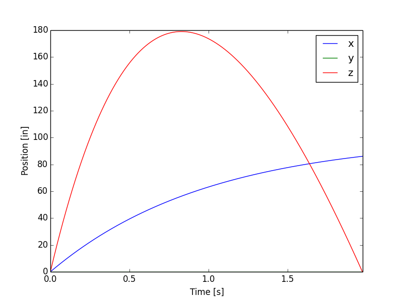

Projectile in a ballistic motion¶
| Reference: J. B. Marion, S. T. Thornton, Classical Dynamics of Particles & Systems, 3rd Edition, Reference: Saunders
College Publishing, 1988, pp. 60-63.
Analysis: Explicit dynamics, unconstrained linear motion. Purpose: Examine the accuracy of integration of the linear motion. Summary: A projectile is subjected to gravity and air resistance loading. The total travel time and travel distance are calculated for an assumed initial velocity and air resistance proportionality constant, \(k\). |
The air resistance force reads
\[\mathbf{f}_{air}=-km\mathbf{v}\]
where \(k\) is the resistance proportionality constant, \(m\) is the mass, and \(\mathbf{v}\) is the point mass velocity (nonzero in the \(x-z\) plane). The exact solution is
\[\begin{split}\mathbf{x}\left(t\right)=\left[\begin{array}{c}
\frac{v_{1}\left(0\right)}{k}\left(1-\exp\left(-kt\right)\right)\\
0\\
\frac{-g_{3}t}{k}+\frac{kv_{3}\left(0\right)+g_{3}}{k^{2}}\left(1-\exp\left(-kt\right)\right)
\end{array}\right]\end{split}\]
where \(g_{3}\) is the vertical component of the gravity acceleration vector \(\mathbf{g}\). The travel time from the ground level \(x_{3}\left(0\right)=0\) until \(x_{3}\left(T\right)=0\) is given by
(1)¶\[T=\frac{hv_{3}\left(0\right)+g_{3}}{g_{3}k}\left(1-\exp\left(-kT\right)\right)\]
Input parameters¶
| Mass \(\left(kg\right)\) | \(m=0.45359237\) |
| Initial linear velocity \(\left(m/s\right)\) | \(\mathbf{v}=\left[2.54,0,12.7\right]\) |
| Gravity acceleration \(\left(m/s^{2}\right)\) | \(\mathbf{g}=\left[0,0,-9.81456\right]\) |
| Proportionality constant | \(k=1\) |
Results¶
The solution of equation (1) is \(T=1.976\) seconds. The time step used in the analysis was \(h=T/1024\). The table below and Fig. 14 summarise the results.
| Target | Solfec | Ratio | |
| Travel time for projectile \(\left(s\right)\) | 1.9760 | 1.9760 | 1.000 |
| \(x\)-direction travel distance \(\left(in\right)\) | 86.138 | 86.081 | 0.999 |

{kind=link}
Fig. 14 Displacement of projectile over time.